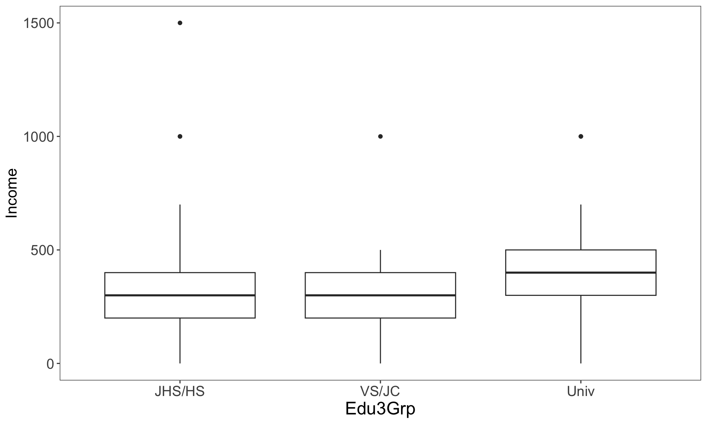

FN_Data2Load <- "data/Anova_SexEduIncome.rds"
DF_org <- readRDS(FN_Data2Load)
DF <- DF_org |> filter(sex == 1)15 ダミー変数
15.1 データ・変数
以下では次の問いに答えることを目的とする。
Q: 学歴によって個人収入に違いはあるのか？
分析対象を25-34歳の男性に限定する。なお、これは「第7回 分散分析1」で取り上げたResearch Questionと同じものである。後に見ていくように、ダミー変数を用いることで分散分析と同じことが、重回帰分析として行うことができる。
raw dataを最初から読み込み、変数の加工を行っても良いが、「第7回 分散分析1」の最後に性別、学歴、本人年収のみを格納したデータセットAnova_SexEduIncome.rdsを保存しているのでこれを用いる。
まずは学歴別に平均収入を算出して可視化してみよう。
# 学歴別に平均収入を算出
DF |>
group_by(Edu3Grp) |>
reframe(Income_mean = mean(Income))# A tibble: 3 × 2
Edu3Grp Income_mean
<fct> <dbl>
1 JHS/HS 326.
2 VS/JC 306.
3 Univ 376.# 学歴別の収入の分布
DF |>
ggplot(aes(x = Edu3Grp,
y = Income)) +
geom_boxplot() +
theme_few() +
theme(strip.text = element_text(size = rel(1.5)),
axis.text.x = element_text(size = rel(1.5)),
axis.text.y = element_text(size = rel(1.5)),
axis.title.x = element_text(size = rel(1.5)),
axis.title.y = element_text(size = rel(1.3)))
15.2 名義ダミー変数（nominal dummy variable）
最初のダミー変数のコーディング方法は最も基本的なもので、あるカテゴリに該当する場合に1、それ以外の場合に0を取る変数を作成する。
| 学歴 Edu |
高専短大ダミー VSJC_dum |
大学ダミー Univ_dum |
|---|---|---|
| 2(短大・高専) | 1 | 0 |
| 3(大学) | 0 | 1 |
| 1(中学・高校) | 0 | 0 |
DF <-
DF |>
mutate(HS_dum = ifelse(Edu3Grp == "JHS/HS", 1L, 0L),
VSJC_dum = ifelse(Edu3Grp == "VS/JC", 1L, 0L),
Univ_dum = ifelse(Edu3Grp == "Univ", 1L, 0L))
# コーディングが意図した通りになされているか確認
DF |>
count(Edu3Grp, HS_dum, VSJC_dum, Univ_dum)# A tibble: 3 × 5
Edu3Grp HS_dum VSJC_dum Univ_dum n
<fct> <int> <int> <int> <int>
1 JHS/HS 1 0 0 104
2 VS/JC 0 1 0 62
3 Univ 0 0 1 164ダミー変数が作成できたらそれらを重回帰モデルに投入していく。ここで重要なことは参照カテゴリ（reference category）（基準カテゴリ（baseline category）とも呼ばれる）を決めることである。はじめに、中学・高校（HS）を参照カテゴリにしてみよう。その場合、以下のように中学以外の学歴ダミー変数、 すなわちVS/JC_dumとUniv_dumを説明変数として回帰式に含める。
RegDum <-
DF |>
with(
lm(Income ~ VSJC_dum + Univ_dum)
)
summary(RegDum)
Call:
lm(formula = Income ~ VSJC_dum + Univ_dum)
Residuals:
Min 1Q Median 3Q Max
-376.45 -105.85 23.55 94.15 1174.28
Coefficients:
Estimate Std. Error t value Pr(>|t|)
(Intercept) 325.72 18.27 17.832 <2e-16 ***
VSJC_dum -19.87 29.89 -0.665 0.5065
Univ_dum 50.73 23.35 2.172 0.0305 *
---
Signif. codes: 0 '***' 0.001 '**' 0.01 '*' 0.05 '.' 0.1 ' ' 1
Residual standard error: 186.3 on 327 degrees of freedom
Multiple R-squared: 0.02528, Adjusted R-squared: 0.01932
F-statistic: 4.241 on 2 and 327 DF, p-value: 0.0152推定された回帰係数とp値を見ると、
- 「高専・短大」は「中学・高校」よりも19.9万円ほど収入低い
- 「大学」は「中学・高校」よりも50.7万円ほど収入が高い
ことがわかる。
つぎに、参照カテゴリを「高専・短大（HS）」に変えて、回帰モデルを推定し直してみよう。この場合は、HS_dumとUniv_dumを説明変数に投入すればよい。
RegDum_refVSJC <-
DF |>
with(
lm(Income ~ HS_dum + Univ_dum)
)
summary(RegDum_refVSJC)
Call:
lm(formula = Income ~ HS_dum + Univ_dum)
Residuals:
Min 1Q Median 3Q Max
-376.45 -105.85 23.55 94.15 1174.28
Coefficients:
Estimate Std. Error t value Pr(>|t|)
(Intercept) 305.85 23.66 12.928 <2e-16 ***
HS_dum 19.87 29.89 0.665 0.5065
Univ_dum 70.60 27.77 2.542 0.0115 *
---
Signif. codes: 0 '***' 0.001 '**' 0.01 '*' 0.05 '.' 0.1 ' ' 1
Residual standard error: 186.3 on 327 degrees of freedom
Multiple R-squared: 0.02528, Adjusted R-squared: 0.01932
F-statistic: 4.241 on 2 and 327 DF, p-value: 0.0152推定された回帰係数とp値を見ると、
- 「中学・高校」は「高専・短大」よりも19.9万円ほど収入が高い
- 「大学」は「高専・短大」よりも70.6万円ほど収入が高い
ことがわかる。
このように、参照カテゴリを変えれば、ダミー変数の推定値も変化する。これは比較対象となるカテゴリが変化しているので当然のことである。むしろ重要なことは、参照カテゴリを変えても回帰モデルのデータへの当てはまりには影響がないことである。例えば、上記の2つの回帰モデルの間で、決定係数（\(R^2\)）が一致していることを確認されたい。
15.3 順序ダミー変数（ordered dummy variable）
つぎに、ダミーコーディングする変数のカテゴリが順序性を持つ場合、ひとつ下のカテゴリを参照カテゴリにする（すなわちカテゴリごとに参照カテゴリが変わっていく）コーディング方法もある。例えば教育年数ごとに変数Edu3Grpのカテゴリを並べると、JHS/HS-VS/JC-Univの順になる。そこで、Edu3Grpに順序づけられたダミーコーディングを施すと、以下の2つのダミー変数が作成される。
- VSJC_o: 「高専・短大」あるいは「大学」の場合に1、それ以外は0
- Univ_o: 「大学」の場合に1、それ以外は0
まず、上記のルールに従ってダミー変数を作成しよう。
| VSJC_o | Univ_o | |
|---|---|---|
| 中学・高校 | 0 | 0 |
| 高専・短大 | 1 | 0 |
| 大学 | 1 | 1 |
DF <-
DF |>
mutate(VSJC_o = ifelse(Edu3Grp == "JHS/HS", 0L, 1L),
Univ_o = ifelse(Edu3Grp == "Univ", 1L, 0L))
# コーディングが意図した通りになされているか確認
DF |>
count(Edu3Grp, VSJC_o, Univ_o)# A tibble: 3 × 4
Edu3Grp VSJC_o Univ_o n
<fct> <int> <int> <int>
1 JHS/HS 0 0 104
2 VS/JC 1 0 62
3 Univ 1 1 164これらの順序ダミー変数を回帰モデルに説明変数として投入してみよう。
RegDum_o <-
DF |>
with(
lm(Income ~ VSJC_o + Univ_o)
)
summary(RegDum_o)
Call:
lm(formula = Income ~ VSJC_o + Univ_o)
Residuals:
Min 1Q Median 3Q Max
-376.45 -105.85 23.55 94.15 1174.28
Coefficients:
Estimate Std. Error t value Pr(>|t|)
(Intercept) 325.72 18.27 17.832 <2e-16 ***
VSJC_o -19.87 29.89 -0.665 0.5065
Univ_o 70.60 27.77 2.542 0.0115 *
---
Signif. codes: 0 '***' 0.001 '**' 0.01 '*' 0.05 '.' 0.1 ' ' 1
Residual standard error: 186.3 on 327 degrees of freedom
Multiple R-squared: 0.02528, Adjusted R-squared: 0.01932
F-statistic: 4.241 on 2 and 327 DF, p-value: 0.0152推定された回帰係数とp値を見ると、
- 「高専・短大」は「中学・高校」よりも19.9万円ほど収入が低い
- 「大学」は「高専・短大」よりも70.6万円ほど収入が高い
ことがわかる。HS_oとUniv_oとでは参照カテゴリが変わっていることを再度確認してほしい。
15.4 ANOVAコーディング（エフェクトコーディング）
ANOVAコーディングは、特定のカテゴリを参照カテゴリに設定せず、各カテゴリの係数の平均を0に固定し、そことの比較を行う方法である。言い換えると、カテゴリ平均のunweighted meanとの比較を行うためのダミーコーディングである。ANOVAコーディングの方法は以下の通りである。
- 基準カテゴリを-1にする
- 各ダミー変数で着目するカテゴリは1
- それ以外のカテゴリーは0
以下では「中学・高校」を基準カテゴリにしてANOVAコーディングによるダミー変数を作成してみよう。
| VSJC_a | Univ_a | |
|---|---|---|
| 中学・高校 | -1 | -1 |
| 高専・短大 | 1 | 0 |
| 大学 | 0 | 1 |
DF <-
DF |>
mutate(VSJC_a = case_match(Edu3Grp,
"JHS/HS" ~ -1L,
"VS/JC" ~ 1L,
"Univ" ~ 0L),
Univ_a = case_match(Edu3Grp,
"JHS/HS" ~ -1L,
"VS/JC" ~ 0L,
"Univ" ~ 1L)
)
# コーディングが意図した通りになされているか確認
DF |> count(Edu3Grp, VSJC_a, Univ_a)# A tibble: 3 × 4
Edu3Grp VSJC_a Univ_a n
<fct> <int> <int> <int>
1 JHS/HS -1 -1 104
2 VS/JC 1 0 62
3 Univ 0 1 164ANOVAコーディングされたこれらのダミー変数を回帰モデルに説明変数として投入してみよう。
RegDum_a <-
DF |>
with(
lm(Income ~ VSJC_a + Univ_a)
)
summary(RegDum_a)
Call:
lm(formula = Income ~ VSJC_a + Univ_a)
Residuals:
Min 1Q Median 3Q Max
-376.45 -105.85 23.55 94.15 1174.28
Coefficients:
Estimate Std. Error t value Pr(>|t|)
(Intercept) 336.01 11.08 30.326 < 2e-16 ***
VSJC_a -30.16 17.59 -1.715 0.08733 .
Univ_a 40.44 13.90 2.909 0.00387 **
---
Signif. codes: 0 '***' 0.001 '**' 0.01 '*' 0.05 '.' 0.1 ' ' 1
Residual standard error: 186.3 on 327 degrees of freedom
Multiple R-squared: 0.02528, Adjusted R-squared: 0.01932
F-statistic: 4.241 on 2 and 327 DF, p-value: 0.0152推定された回帰係数とp値を見ると、
- カテゴリ平均のunweighted meanは336万円。これが各ダミー変数の比較対象となる。
- 「高専・短大」はカテゴリ平均のunweighted meanよりも30.2万円ほど収入が低いが、この差は統計的に有意ではない（有意水準を5%とした場合）。
- 「大学」はカテゴリ平均のunweighted meanよりも40.4万円ほど収入が高い
- 「中学・高校」の収入の平均値はカテゴリ平均のunweighted meanよりも(-30.2 + 40.4) = 10.3万円高い
ことがわかる。
15.5 Constastコーディング
最後に紹介するContrastコーディングは、変数のカテゴリ間に入れ子構造が存在する場合に有効なダミーコーディングのひとつである。例えば平均収入について、以下の2つの比較に関心があるとしよう。
- 「四年制大学卒の人々」と「それ以外の人々」との間の収入格差
- 非四年制大学卒の人々の中での収入の学歴差、すなわち「中学・高校」と「高専・短大」の間の収入格差
すなわち、「中学・高校」「高専・短大」「大学」というカテゴリ区分の中には、まず「四年制大学卒か否か」という区分が存在し、さらに「非四年制大学卒」の中で「中学・高校」と「高専・短大」の区分が存在する。こうした2つの比較を行うためにはまず以下のようにダミーコーディングを施せばよい。
| ContDum1 | ContDum2 | |
|---|---|---|
| 中学・高校 | -.5 | -1 |
| 高専・短大 | -.5 | 1 |
| 大学 | 1 | 0 |
DF <-
DF |>
mutate(ContDum1 = case_match(Edu3Grp,
"JHS/HS" ~ -.5,
"VS/JC" ~ -.5,
"Univ" ~ 1),
ContDum2 = case_match(Edu3Grp,
"JHS/HS" ~ -1,
"VS/JC" ~ 1,
"Univ" ~ 0)
)
# コーディングが意図した通りになされているか確認
DF |> count(Edu3Grp, ContDum1, ContDum2)# A tibble: 3 × 4
Edu3Grp ContDum1 ContDum2 n
<fct> <dbl> <dbl> <int>
1 JHS/HS -0.5 -1 104
2 VS/JC -0.5 1 62
3 Univ 1 0 164これらのダミー変数を回帰モデルに説明変数として投入してみよう。
RegDum_c <-
DF |>
with(
lm(Income ~ ContDum1 + ContDum2)
)
summary(RegDum_c)
Call:
lm(formula = Income ~ ContDum1 + ContDum2)
Residuals:
Min 1Q Median 3Q Max
-376.45 -105.85 23.55 94.15 1174.28
Coefficients:
Estimate Std. Error t value Pr(>|t|)
(Intercept) 336.005 11.080 30.326 < 2e-16 ***
ContDum1 40.443 13.903 2.909 0.00387 **
ContDum2 -9.937 14.944 -0.665 0.50655
---
Signif. codes: 0 '***' 0.001 '**' 0.01 '*' 0.05 '.' 0.1 ' ' 1
Residual standard error: 186.3 on 327 degrees of freedom
Multiple R-squared: 0.02528, Adjusted R-squared: 0.01932
F-statistic: 4.241 on 2 and 327 DF, p-value: 0.0152推定結果から以下のことがわかる。
- カテゴリ平均のunweighted mean（全体平均）は336万円である
- 「大学」の平均収入は、「全体平均」よりも40.4万円高い
- 「非四年制大学卒（中学・高校・高専・短大）の平均収入」（「中学・高校」と「高専・短大」のunweighted mean）は「全体平均」よりも0.5 \(\times\) 40.4 = 20.2万円低い
- 「高専・短大」の平均収入は、「中学・高校・高専・短大の平均収入」よりも9.9万円低い
- 「中学・高校」の平均収入は、「非四年制大学卒（中学・高校・高専・短大）の平均収入」よりも9.9万円高い